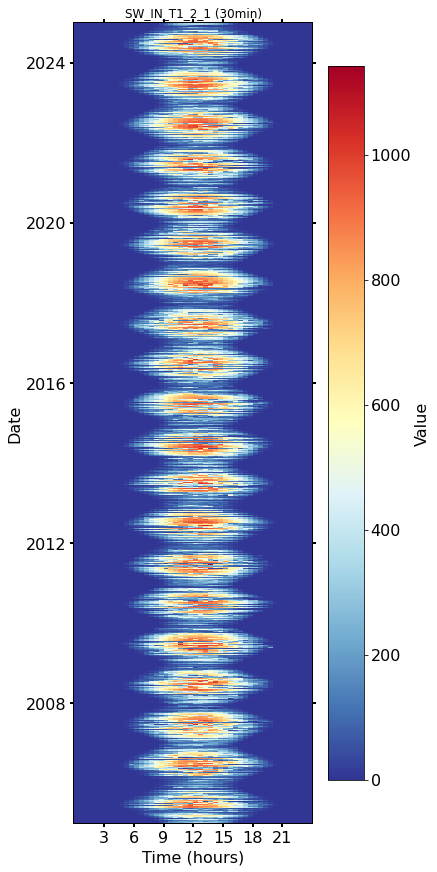
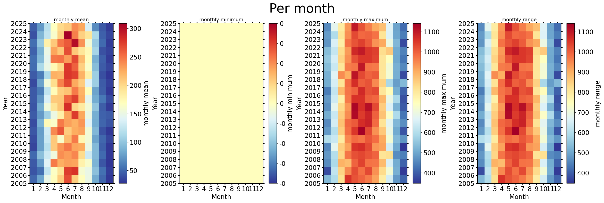
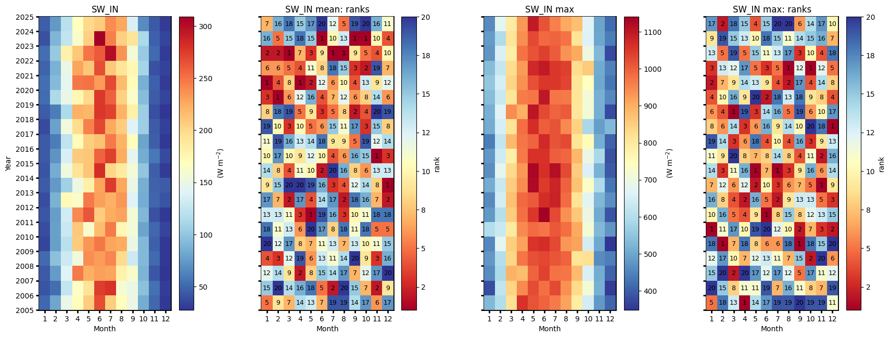
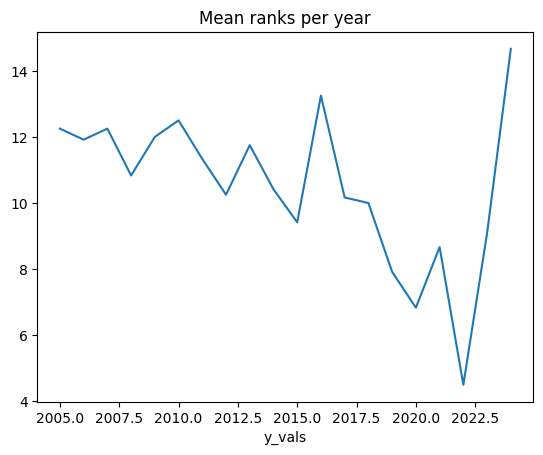
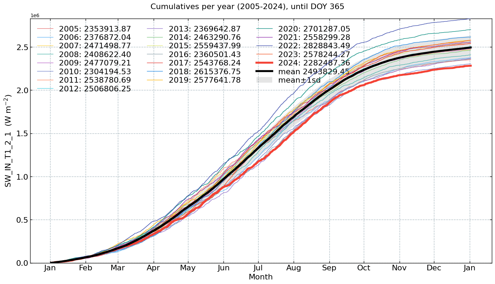
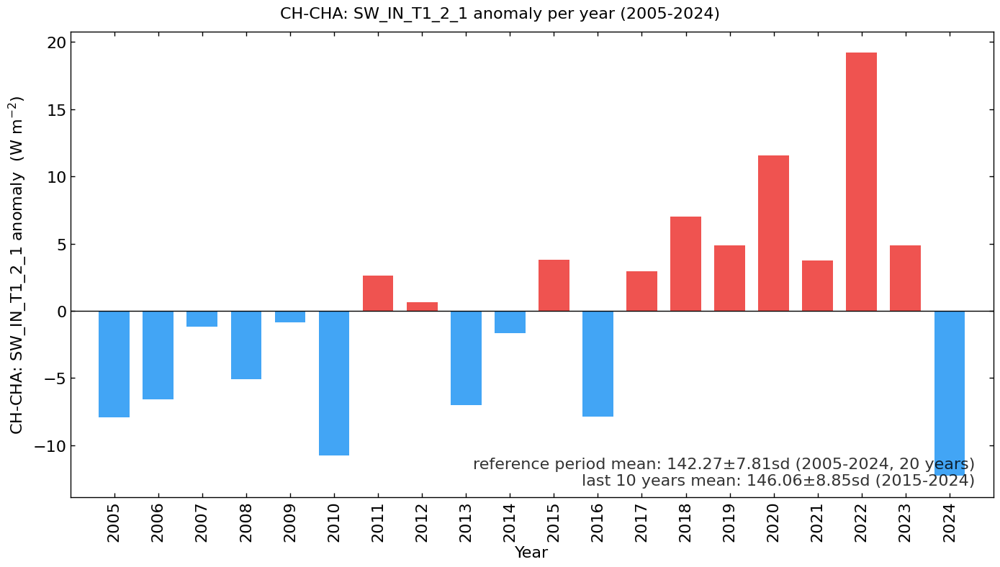

Meteo: Shot-wave incoming radiation (SW_IN) (2005-2024)#
Author: Lukas Hörtnagl (holukas@ethz.ch)
Variable#
varname = 'SW_IN_T1_2_1'
var = "SW_IN" # Name shown in plots
units = r"($\mathrm{W\ m^{-2}}$)"
Imports#
import importlib.metadata
import warnings
from datetime import datetime
from pathlib import Path
import pandas as pd
import matplotlib.pyplot as plt
import matplotlib.gridspec as gridspec
import diive as dv
from diive.core.io.files import save_parquet, load_parquet
from diive.core.plotting.cumulative import CumulativeYear
from diive.core.plotting.bar import LongtermAnomaliesYear
warnings.filterwarnings(action='ignore', category=FutureWarning)
warnings.filterwarnings(action='ignore', category=UserWarning)
version_diive = importlib.metadata.version("diive")
print(f"diive version: v{version_diive}")
diive version: v0.87.0
Load data#
SOURCEDIR = r"../80_FINALIZE"
FILENAME = r"81.1_FLUXES_M15_MGMT_L4.2_NEE_GPP_RECO_LE_H_FN2O_FCH4.parquet"
FILEPATH = Path(SOURCEDIR) / FILENAME
df = load_parquet(filepath=FILEPATH)
df
Loaded .parquet file ..\80_FINALIZE\81.1_FLUXES_M15_MGMT_L4.2_NEE_GPP_RECO_LE_H_FN2O_FCH4.parquet (4.571 seconds).
--> Detected time resolution of <30 * Minutes> / 30min
| .PREC_RAIN_TOT_GF1_0.5_1_MEAN3H-12 | .PREC_RAIN_TOT_GF1_0.5_1_MEAN3H-18 | .PREC_RAIN_TOT_GF1_0.5_1_MEAN3H-24 | .PREC_RAIN_TOT_GF1_0.5_1_MEAN3H-6 | .SWC_GF1_0.15_1_gfXG_MEAN3H-12 | .SWC_GF1_0.15_1_gfXG_MEAN3H-18 | .SWC_GF1_0.15_1_gfXG_MEAN3H-24 | .SWC_GF1_0.15_1_gfXG_MEAN3H-6 | .TS_GF1_0.04_1_gfXG_MEAN3H-12 | .TS_GF1_0.04_1_gfXG_MEAN3H-18 | .TS_GF1_0.04_1_gfXG_MEAN3H-24 | .TS_GF1_0.04_1_gfXG_MEAN3H-6 | .TS_GF1_0.15_1_gfXG_MEAN3H-12 | .TS_GF1_0.15_1_gfXG_MEAN3H-18 | .TS_GF1_0.15_1_gfXG_MEAN3H-24 | ... | GPP_NT_CUT_50_gfRF | RECO_DT_CUT_50_gfRF | GPP_DT_CUT_50_gfRF | RECO_DT_CUT_50_gfRF_SD | GPP_DT_CUT_50_gfRF_SD | G_GF1_0.03_1 | G_GF1_0.03_2 | G_GF1_0.05_1 | G_GF1_0.05_2 | G_GF4_0.02_1 | G_GF5_0.02_1 | LW_OUT_T1_2_1 | NETRAD_T1_2_1 | PPFD_OUT_T1_2_2 | SW_OUT_T1_2_1 | |
|---|---|---|---|---|---|---|---|---|---|---|---|---|---|---|---|---|---|---|---|---|---|---|---|---|---|---|---|---|---|---|---|
| TIMESTAMP_MIDDLE | |||||||||||||||||||||||||||||||
| 2005-01-01 00:15:00 | NaN | NaN | NaN | NaN | NaN | NaN | NaN | NaN | NaN | NaN | NaN | NaN | NaN | NaN | NaN | ... | 0.918553 | 0.093071 | 0.0 | 0.080016 | 0.0 | NaN | NaN | NaN | NaN | NaN | NaN | NaN | NaN | NaN | NaN |
| 2005-01-01 00:45:00 | NaN | NaN | NaN | NaN | NaN | NaN | NaN | NaN | NaN | NaN | NaN | NaN | NaN | NaN | NaN | ... | 0.917972 | 0.092682 | 0.0 | 0.079688 | 0.0 | NaN | NaN | NaN | NaN | NaN | NaN | NaN | NaN | NaN | NaN |
| 2005-01-01 01:15:00 | NaN | NaN | NaN | NaN | NaN | NaN | NaN | NaN | NaN | NaN | NaN | NaN | NaN | NaN | NaN | ... | 0.163001 | 0.093071 | 0.0 | 0.080016 | 0.0 | NaN | NaN | NaN | NaN | NaN | NaN | NaN | NaN | NaN | NaN |
| 2005-01-01 01:45:00 | NaN | NaN | NaN | NaN | NaN | NaN | NaN | NaN | NaN | NaN | NaN | NaN | NaN | NaN | NaN | ... | 0.190890 | 0.093071 | 0.0 | 0.080016 | 0.0 | NaN | NaN | NaN | NaN | NaN | NaN | NaN | NaN | NaN | NaN |
| 2005-01-01 02:15:00 | NaN | NaN | NaN | NaN | NaN | NaN | NaN | NaN | NaN | NaN | NaN | NaN | NaN | NaN | NaN | ... | 0.167042 | 0.092295 | 0.0 | 0.079361 | 0.0 | NaN | NaN | NaN | NaN | NaN | NaN | NaN | NaN | NaN | NaN |
| ... | ... | ... | ... | ... | ... | ... | ... | ... | ... | ... | ... | ... | ... | ... | ... | ... | ... | ... | ... | ... | ... | ... | ... | ... | ... | ... | ... | ... | ... | ... | ... |
| 2024-12-31 21:45:00 | 0.0 | 0.0 | 0.0 | 0.0 | 52.229004 | 52.226300 | 52.226689 | 52.216796 | 3.458828 | 3.150402 | 3.115260 | 3.660897 | 4.335667 | 4.347764 | 4.385967 | ... | -0.334996 | 1.091028 | 0.0 | 0.265808 | 0.0 | NaN | NaN | -9.097370 | -7.880106 | NaN | NaN | 311.167160 | -5.883538 | 0.0 | 0.0 |
| 2024-12-31 22:15:00 | 0.0 | 0.0 | 0.0 | 0.0 | 52.227858 | 52.227986 | 52.224528 | 52.214211 | 3.522570 | 3.187638 | 3.103440 | 3.643396 | 4.338551 | 4.342880 | 4.379524 | ... | -0.310533 | 1.078751 | 0.0 | 0.264327 | 0.0 | NaN | NaN | -9.561669 | -8.172388 | NaN | NaN | 310.079817 | -6.269816 | 0.0 | 0.0 |
| 2024-12-31 22:45:00 | 0.0 | 0.0 | 0.0 | 0.0 | 52.226640 | 52.229837 | 52.222456 | 52.209876 | 3.578745 | 3.230037 | 3.095339 | 3.624025 | 4.343767 | 4.339440 | 4.372636 | ... | -0.225651 | 1.079759 | 0.0 | 0.264447 | 0.0 | NaN | NaN | -10.138718 | -8.527732 | NaN | NaN | 309.604987 | -6.934394 | 0.0 | 0.0 |
| 2024-12-31 23:15:00 | 0.0 | 0.0 | 0.0 | 0.0 | 52.224375 | 52.231151 | 52.221324 | 52.238293 | 3.624160 | 3.278488 | 3.093806 | 3.601135 | 4.350872 | 4.336333 | 4.366082 | ... | -0.558285 | 1.062164 | 0.0 | 0.262373 | 0.0 | NaN | NaN | -10.649611 | -8.871628 | NaN | NaN | 308.812117 | -5.696729 | 0.0 | 0.0 |
| 2024-12-31 23:45:00 | 0.0 | 0.0 | 0.0 | 0.0 | 52.222007 | 52.230632 | 52.222701 | 52.273511 | 3.656167 | 3.331678 | 3.103003 | 3.579020 | 4.360311 | 4.334225 | 4.359530 | ... | -0.317543 | 1.047483 | 0.0 | 0.260688 | 0.0 | NaN | NaN | -10.944774 | -9.138224 | NaN | NaN | 307.372117 | -8.102484 | 0.0 | 0.0 |
350640 rows × 812 columns
series = df[varname].copy()
series
TIMESTAMP_MIDDLE
2005-01-01 00:15:00 0.0
2005-01-01 00:45:00 0.0
2005-01-01 01:15:00 0.0
2005-01-01 01:45:00 0.0
2005-01-01 02:15:00 0.0
...
2024-12-31 21:45:00 0.0
2024-12-31 22:15:00 0.0
2024-12-31 22:45:00 0.0
2024-12-31 23:15:00 0.0
2024-12-31 23:45:00 0.0
Freq: 30min, Name: SW_IN_T1_2_1, Length: 350640, dtype: float64
xlabel = f"{var} ({units})"
xlim = [series.min(), series.max()]
Stats#
Overall mean#
_yearly_avg = series.resample('YE').mean()
_overall_mean = _yearly_avg.mean()
_overall_sd = _yearly_avg.std()
print(f"Overall mean: {_overall_mean} +/- {_overall_sd}")
Overall mean: 142.26910305225957 +/- 7.808229266372441
Yearly means#
series.resample('YE').mean()
TIMESTAMP_MIDDLE
2005-12-31 134.355814
2006-12-31 135.666212
2007-12-31 141.067281
2008-12-31 137.163616
2009-12-31 141.385800
2010-12-31 131.517953
2011-12-31 144.907574
2012-12-31 142.896565
2013-12-31 135.253588
2014-12-31 140.598788
2015-12-31 146.086643
2016-12-31 134.401040
2017-12-31 145.192251
2018-12-31 149.279495
2019-12-31 147.125672
2020-12-31 153.846174
2021-12-31 146.021649
2022-12-31 161.463670
2023-12-31 147.160061
2024-12-31 129.992216
Freq: YE-DEC, Name: SW_IN_T1_2_1, dtype: float64
Monthly averages#
seriesdf = pd.DataFrame(series)
seriesdf['MONTH'] = seriesdf.index.month
seriesdf['YEAR'] = seriesdf.index.year
monthly_avg = seriesdf.groupby(['YEAR', 'MONTH'])[varname].mean().unstack()
monthly_avg
| MONTH | 1 | 2 | 3 | 4 | 5 | 6 | 7 | 8 | 9 | 10 | 11 | 12 |
|---|---|---|---|---|---|---|---|---|---|---|---|---|
| YEAR | ||||||||||||
| 2005 | 49.786290 | 80.487103 | 147.603943 | 169.844213 | 207.320116 | 267.234259 | 206.605063 | 168.406810 | 149.684341 | 83.978029 | 50.427216 | 28.897572 |
| 2006 | 41.368657 | 53.663377 | 124.637048 | 165.518261 | 193.451108 | 274.536643 | 280.006797 | 158.426413 | 149.527674 | 96.050795 | 54.316725 | 31.820919 |
| 2007 | 43.158046 | 75.131413 | 141.239700 | 247.140637 | 224.268807 | 230.481517 | 227.602793 | 180.012133 | 162.536687 | 89.089943 | 41.925751 | 27.639557 |
| 2008 | 51.156328 | 96.721799 | 130.864679 | 153.624506 | 238.389338 | 231.397902 | 241.488335 | 197.968448 | 130.336162 | 91.777790 | 51.266992 | 28.941676 |
| 2009 | 34.916571 | 77.407979 | 119.077912 | 208.811299 | 234.584434 | 248.263890 | 228.103889 | 224.333001 | 150.505691 | 91.399366 | 46.572884 | 29.319686 |
| 2010 | 37.782288 | 77.886631 | 128.393283 | 209.639992 | 162.501512 | 215.707829 | 247.335335 | 175.822384 | 156.474499 | 79.776834 | 50.595668 | 34.539569 |
| 2011 | 42.926370 | 76.388086 | 132.588952 | 240.700872 | 263.236178 | 207.338394 | 224.806449 | 229.281393 | 156.705108 | 90.845693 | 40.791743 | 28.776724 |
| 2012 | 38.304772 | 87.847401 | 173.175992 | 163.488935 | 246.859886 | 230.533297 | 222.306829 | 234.708784 | 140.542598 | 84.355612 | 48.579555 | 40.876400 |
| 2013 | 44.709167 | 74.858826 | 106.902927 | 150.719549 | 181.798196 | 228.230506 | 275.676735 | 227.173503 | 150.513363 | 85.428740 | 47.462954 | 44.882390 |
| 2014 | 41.510355 | 84.270235 | 153.327885 | 192.870338 | 212.066205 | 282.403085 | 200.790773 | 185.848990 | 157.149566 | 99.783304 | 45.293994 | 30.139630 |
| 2015 | 43.997591 | 71.277607 | 135.705616 | 208.262935 | 210.642199 | 256.876860 | 272.871473 | 224.404857 | 145.275831 | 84.709190 | 57.985756 | 36.501663 |
| 2016 | 43.556143 | 59.579096 | 122.862206 | 172.403800 | 206.077426 | 213.000109 | 246.623742 | 221.854413 | 169.562597 | 79.721918 | 45.379396 | 29.388341 |
| 2017 | 37.395985 | 78.666490 | 154.676476 | 197.541310 | 243.918255 | 270.003710 | 225.565650 | 207.410052 | 140.722341 | 105.311702 | 44.821129 | 32.168826 |
| 2018 | 45.001708 | 60.089136 | 113.942453 | 222.094828 | 219.537955 | 277.345600 | 271.727764 | 221.895436 | 182.148234 | 104.871818 | 39.617402 | 28.453118 |
| 2019 | 52.327428 | 112.372418 | 149.103748 | 174.400815 | 199.172305 | 276.997023 | 258.235055 | 205.226459 | 162.974236 | 94.101485 | 45.075798 | 34.446633 |
| 2020 | 53.844613 | 93.409828 | 145.778073 | 248.126893 | 250.103162 | 231.840138 | 269.251948 | 216.902238 | 171.179325 | 86.935109 | 47.267541 | 30.294460 |
| 2021 | 47.962721 | 88.032365 | 150.606054 | 228.309574 | 210.722125 | 266.655546 | 209.946431 | 190.728001 | 174.832052 | 109.283156 | 39.731332 | 33.885071 |
| 2022 | 53.570054 | 101.340688 | 180.353813 | 209.109673 | 249.196528 | 261.494711 | 300.208004 | 236.039569 | 156.933282 | 103.138659 | 50.767965 | 30.639543 |
| 2023 | 40.689071 | 89.336347 | 123.473670 | 162.673454 | 204.750119 | 308.865340 | 244.968892 | 204.737263 | 190.321221 | 112.228047 | 47.060808 | 35.100678 |
| 2024 | 45.702037 | 74.383818 | 118.997371 | 168.066079 | 199.140729 | 207.031729 | 238.992807 | 226.479307 | 136.335710 | 68.056881 | 43.791908 | 30.477883 |
Heatmap plots#
Half-hourly#
fig, axs = plt.subplots(ncols=1, figsize=(6, 12), dpi=72, layout="constrained")
dv.heatmapdatetime(series=series, ax=axs, cb_digits_after_comma=0).plot()

Monthly#
fig, axs = plt.subplots(ncols=4, figsize=(21, 7), dpi=120, layout="constrained")
fig.suptitle(f'Per month', fontsize=32)
dv.heatmapyearmonth(series_monthly=series.resample('M').mean(), title="monthly mean", ax=axs[0], cb_digits_after_comma=0, zlabel="monthly mean").plot()
dv.heatmapyearmonth(series_monthly=series.resample('M').min(), title="monthly minimum", ax=axs[1], cb_digits_after_comma=0, zlabel="monthly minimum").plot()
dv.heatmapyearmonth(series_monthly=series.resample('M').max(), title="monthly maximum", ax=axs[2], cb_digits_after_comma=0, zlabel="monthly maximum").plot()
_range = series.resample('M').max().sub(series.resample('M').min())
dv.heatmapyearmonth(series_monthly=_range, title="monthly range", ax=axs[3], cb_digits_after_comma=0, zlabel="monthly range").plot()

Monthly ranks#
# Figure
fig = plt.figure(facecolor='white', figsize=(17, 6))
# Gridspec for layout
gs = gridspec.GridSpec(1, 4) # rows, cols
gs.update(wspace=0.35, hspace=0.3, left=0.03, right=0.97, top=0.97, bottom=0.03)
ax_mean = fig.add_subplot(gs[0, 0])
ax_mean_ranks = fig.add_subplot(gs[0, 1])
ax_max = fig.add_subplot(gs[0, 2])
ax_max_ranks = fig.add_subplot(gs[0, 3])
params = {'axlabels_fontsize': 10, 'ticks_labelsize': 10, 'cb_labelsize': 10}
dv.heatmapyearmonth_ranks(ax=ax_mean, series=series, agg='mean', ranks=False, zlabel=f"{units}", cmap="RdYlBu_r", show_values=False, **params).plot()
hm_mean_ranks = dv.heatmapyearmonth_ranks(ax=ax_mean_ranks, series=series, agg='mean', **params)
hm_mean_ranks.plot()
dv.heatmapyearmonth_ranks(ax=ax_max, series=series, agg='max', ranks=False, zlabel=f"{units}", cmap="RdYlBu_r", show_values=False, **params).plot()
dv.heatmapyearmonth_ranks(ax=ax_max_ranks, series=series, agg='max', **params).plot()
ax_mean.set_title(f"{var}", color='black')
ax_mean_ranks.set_title(f"{var} mean: ranks", color='black')
ax_max.set_title(f"{var} max", color='black')
ax_max_ranks.set_title(f"{var} max: ranks", color='black')
ax_mean.tick_params(left=True, right=False, top=False, bottom=True,
labelleft=True, labelright=False, labeltop=False, labelbottom=True)
ax_mean_ranks.tick_params(left=True, right=False, top=False, bottom=True,
labelleft=False, labelright=False, labeltop=False, labelbottom=True)
ax_max.tick_params(left=True, right=False, top=False, bottom=True,
labelleft=False, labelright=False, labeltop=False, labelbottom=True)
ax_max_ranks.tick_params(left=True, right=False, top=False, bottom=True,
labelleft=False, labelright=False, labeltop=False, labelbottom=True)
ax_mean_ranks.set_ylabel("")
ax_max.set_ylabel("")
ax_max_ranks.set_ylabel("")
fig.show()

Mean ranks per year#
hm_mean_ranks.hm.get_plot_data().mean(axis=1).plot(title="Mean ranks per year");

Ridgeline plots#
Yearly#
# rp = dv.ridgeline(series=series)
# rp.plot(
# how='yearly',
# kd_kwargs=None, # params from scikit KernelDensity as dict
# xlim=xlim, # min/max as list
# ylim=[0, 0.01], # min/max as list
# hspace=-0.8, # overlap between months
# xlabel=f"{var} ({units})",
# fig_width=5,
# fig_height=9,
# shade_percentile=0.5,
# show_mean_line=False,
# fig_title=f"{var} per year (2005-2024)",
# fig_dpi=72,
# showplot=True,
# ascending=False
# )
Monthly#
# rp.plot(
# how='monthly',
# kd_kwargs=None, # params from scikit KernelDensity as dict
# xlim=xlim, # min/max as list
# ylim=[0, 0.01], # min/max as list
# hspace=-0.6, # overlap between months
# xlabel=f"{var} ({units})",
# fig_width=4.5,
# fig_height=8,
# shade_percentile=0.5,
# show_mean_line=False,
# fig_title=f"{var} per month (2005-2024)",
# fig_dpi=72,
# showplot=True,
# ascending=False
# )
Weekly#
# rp.plot(
# how='weekly',
# kd_kwargs=None, # params from scikit KernelDensity as dict
# xlim=xlim, # min/max as list
# ylim=[0, 0.15], # min/max as list
# hspace=-0.6, # overlap
# xlabel=f"{var} ({units})",
# fig_width=6,
# fig_height=16,
# shade_percentile=0.5,
# show_mean_line=False,
# fig_title=f"{var} per week (2005-2024)",
# fig_dpi=72,
# showplot=True,
# ascending=False
# )
Single years per month#
# uniq_years = series.index.year.unique()
# for uy in uniq_years:
# series_yr = series.loc[series.index.year == uy].copy()
# rp = dv.ridgeline(series=series_yr)
# rp.plot(
# how='monthly',
# kd_kwargs=None, # params from scikit KernelDensity as dict
# xlim=xlim, # min/max as list
# ylim=[0, 0.18], # min/max as list
# hspace=-0.6, # overlap
# xlabel=f"{var} ({units})",
# fig_width=6,
# fig_height=7,
# shade_percentile=0.5,
# show_mean_line=False,
# fig_title=f"{var} per month ({uy})",
# fig_dpi=72,
# showplot=True,
# ascending=False
# )
Single years per week#
# uniq_years = series.index.year.unique()
# for uy in uniq_years:
# series_yr = series.loc[series.index.year == uy].copy()
# rp = dv.ridgeline(series=series_yr)
# rp.plot(
# how='weekly',
# kd_kwargs=None, # params from scikit KernelDensity as dict
# xlim=xlim, # min/max as list
# ylim=[0, 0.3], # min/max as list
# hspace=-0.8, # overlap
# xlabel=f"{var} ({units})",
# fig_width=9,
# fig_height=18,
# shade_percentile=0.5,
# show_mean_line=False,
# fig_title=f"{var} per week ({uy})",
# fig_dpi=72,
# showplot=True,
# ascending=False
# )
Cumulative plot#
CumulativeYear(
series=series,
series_units=units,
start_year=2005,
end_year=2024,
show_reference=True,
excl_years_from_reference=None,
highlight_year=2024,
highlight_year_color='#F44336').plot();

Long-term anomalies#
series_yearly_mean = series.resample('YE').mean()
series_yearly_mean.index = series_yearly_mean.index.year
series_label = f"CH-CHA: {varname}"
LongtermAnomaliesYear(series=series_yearly_mean,
series_label=series_label,
series_units=units,
reference_start_year=2005,
reference_end_year=2024).plot()

End of notebook#
dt_string = datetime.now().strftime("%Y-%m-%d %H:%M:%S")
print(f"Finished. {dt_string}")
Finished. 2025-05-16 12:49:51